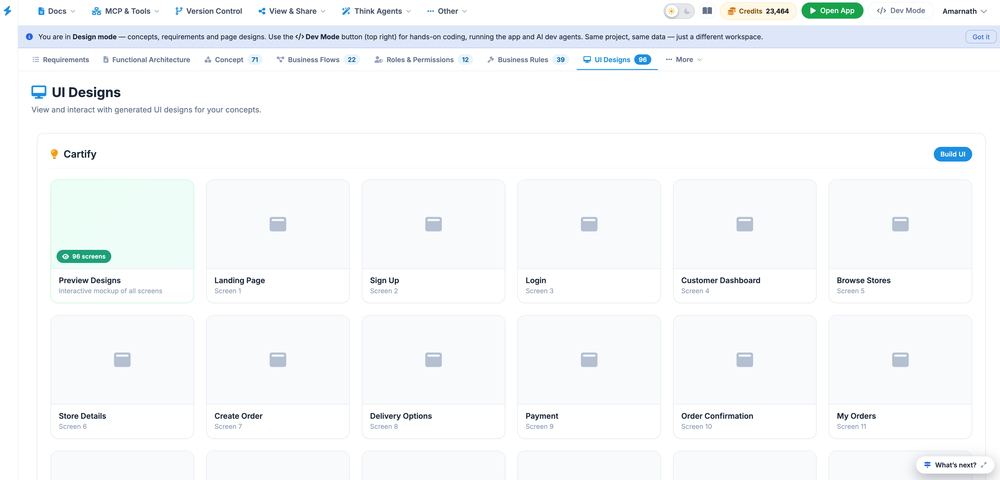
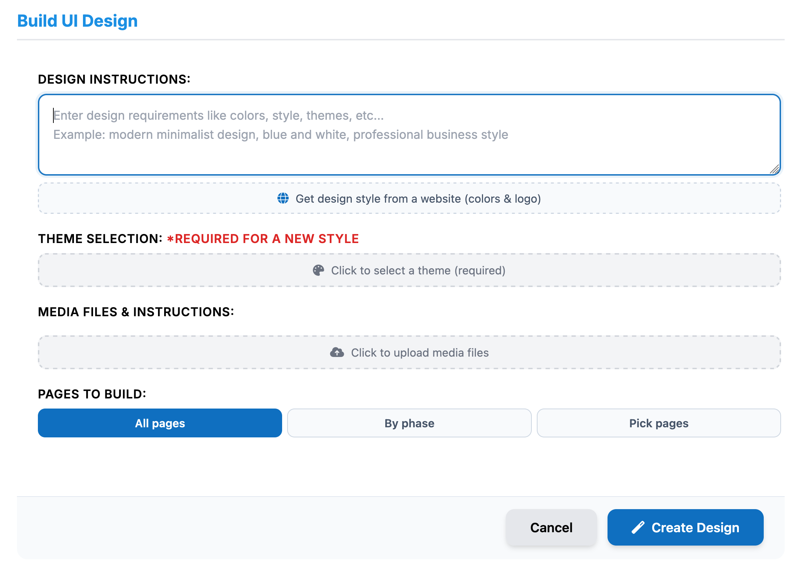
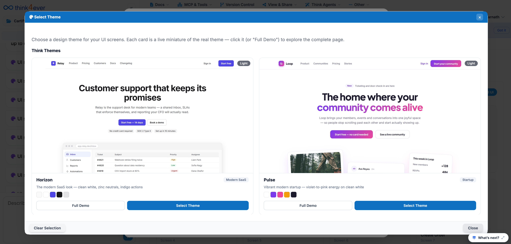
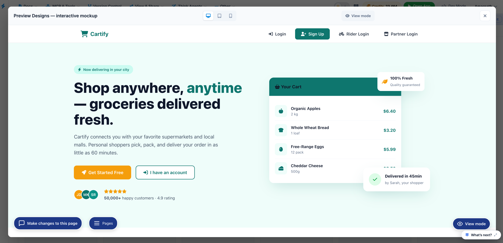
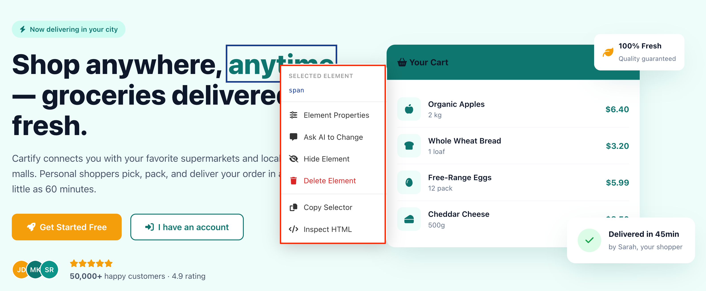
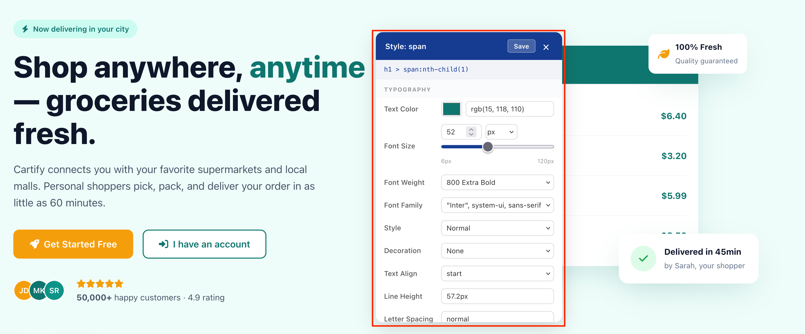
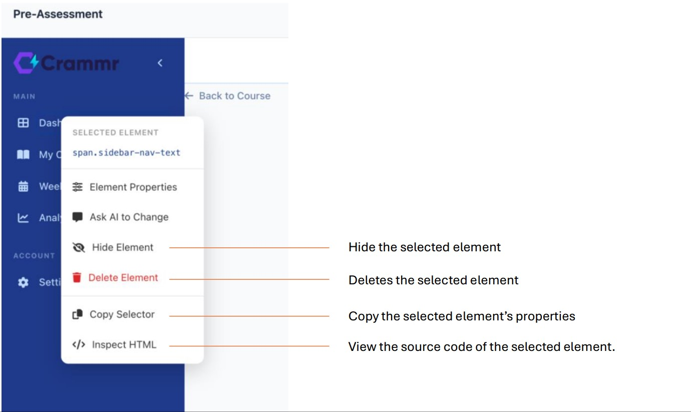
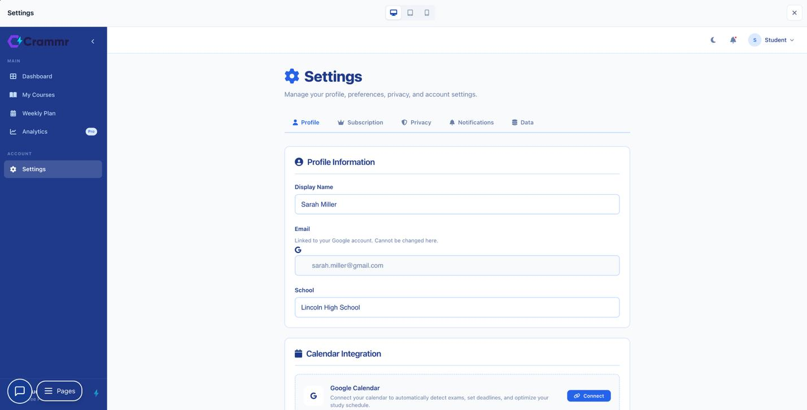

UI Designs
The UI Designs submenu serves as the primary repository for the project's visual interface assets. It is designed to bridge the gap between conceptual design and development by providing a central location for high-fidelity visuals.

Core Functions
- Visual Interface Storage: Access all screen designs, from initial wireframes to polished, high-fidelity mockups.
- Prototyping: Locate interactive prototypes to review user journeys and interface animations.
- Asset Management: View the total count of design files (currently 30) at a glance via the numerical indicator on the right.
Build UI Design
The Build UI Design section allows users to define the visual style, branding, media, and pages that should be included when generating the application's UI design.
Users can provide design requirements, select a theme, upload supporting media, and specify which pages should be included in the generated design.

Design Instructions
The Design Instructions field allows users to describe the desired visual style and design requirements.
Users can specify requirements such as:
- Colors and color combinations
- Design style
- Theme or visual direction
- Branding requirements
- Layout preferences
- Overall look and feel
Example:
Modern minimalist design, blue and white, professional business style.
The system also provides an option to Get design style from a website, which can be used to reference the colors and logo of an existing website.
Theme Selection
The Theme Selection option allows users to select the visual theme to be applied to the generated design.
A theme selection is required when creating a new style.
To select a theme:
- Click Click to select a theme.
- Select the desired theme from the available options.
- Confirm the selected theme before proceeding.

Media Files & Instructions
The Media Files & Instructions section allows users to upload media assets that should be considered when generating the UI design.
These may include:
- Logos
- Images
- Icons
- Brand assets
- Other visual references
To upload media:
- Click Click to upload media files.
- Select the required file or files.
- Verify that the uploaded media is displayed correctly.
- Provide any additional instructions, if required.
Pages to Build
The Pages to Build section determines which application pages should be included in the UI design.
Users can choose from three options:
| Option | Description |
|---|---|
| All Pages | Builds the UI design for all available application pages. |
| By Phase | Allows users to select pages based on their associated development or roadmap phase. |
| Pick Pages | Allows users to manually select specific pages to include. |
All Pages is selected by default.
Creating the Design
After completing the design requirements, theme selection, media uploads, and page selection, users can generate the UI design.
To create a design:
- Enter the required Design Instructions.
- Select a Theme.
- Upload any required Media Files.
-
Select the pages to be built:
- All Pages
- By Phase
- Pick Pages
- Click Create Design.
To exit without generating a design, click Cancel.
Note: A theme must be selected when creating a new style. Ensure all required design information is provided before clicking Create Design.
User Guidance
- Active State: When selected, this submenu is highlighted with a soft purple background and blue text, indicating that the files currently displayed in the main content area belong to this category.
- Navigation: Use the Monitor icon to quickly identify this section in the sidebar.
Best Practice: Keep this section updated with the latest design iterations to ensure the development team is working from the most recent "Source of Truth" for the user interface.
Click on each folder to view how it looks:

An overlay window will be displayed
Right click on each element to view options to modify

Typography Style Editor

The Typography Editor is a specialized configuration panel that allows for precise control over the visual appearance of text elements within the interface—specifically targeting the span.sidebar-nav-text element in this view.
Configuration Options
| Feature | Description |
|---|---|
| Text Color | Adjust the font color using an RGB value (currently rgb(191, 219, 254)) or by selecting a shade from the integrated color picker. |
| Font Size | Set the text dimensions using the numerical input or the slider, ranging from 6px to 120px. |
| Font Weight | Define the thickness of the characters (currently set to 500 Medium). |
| Font Family | Choose the typeface from a prioritized stack (e.g., Inter, -apple-system). |
| Style & Decoration | Toggle font styles like Italic or decorations such as Underline or None. |
| Text Align | Control the horizontal placement of the text (e.g., start, center, or end). |
Key Interface Elements
- CSS Path: The blue header area displays the exact CSS selector path (div.sidebar-nav > ...), ensuring you know exactly which element is being modified.
- Save & Close: Use the Save button to commit your styling changes to the live project, or click the "X" to discard changes and exit the editor.
- Unit Selector: Easily switch between pixel (px) and other relative units for font sizing to ensure responsive design compliance.
Note: Changes made in this panel are often applied globally to all elements sharing the same class, maintaining visual consistency across the sidebar navigation.
Modify Page Assistant
The Modify Page overlay is an AI-powered conversational interface designed to help you make rapid design and structural changes to your project. By selecting specific elements and describing your desired outcome, the assistant automates the CSS or HTML adjustments for you.
Core Components
| Element | Description |
|---|---|
| Conversational Agent | The message bubble at the top provides status updates and prompts you for specific design instructions. |
| Element Selector | The blue tag (e.g., span.sidebar-nav-text) indicates exactly which part of the page is currently being targeted for modification. |
| Instruction Input | The primary text area where you can type natural language commands like "Make this text bold" or "Change the font color to dark red." |
| Action Buttons | Send initiates the request, while Undo allows you to revert the last change immediately. |
Key Features
- Contextual Awareness: The assistant knows which element you have selected, allowing you to give short commands without re-specifying the target.
- Real-time Feedback: As you type, the interface provides a placeholder hint reminding you of the active selection.
- Non-Destructive Editing: The presence of the Undo button ensures you can experiment with different styles safely.
How to Use
- Select: Click an element on the underlying page to focus the assistant's attention.
- Describe: Type your desired change into the input box (e.g., "Increase the padding and add a border").
- Execute: Click Send to see the changes applied in real-time.
Other Options:

Responsiveness
In the top-center of the interface, you can find the device toggle icons (Desktop, Tablet, and Mobile) used to preview how the layout adapts to various screen sizes.
Desktop View
The default current view – this is optimized for large screens, offering a spacious and organized layout.
Tablet View
In this mode, the interface shifts to accommodate mid-sized touchscreens.
Mobile View
The mobile view prioritizes vertical stacking to ensure readability on small screens.
